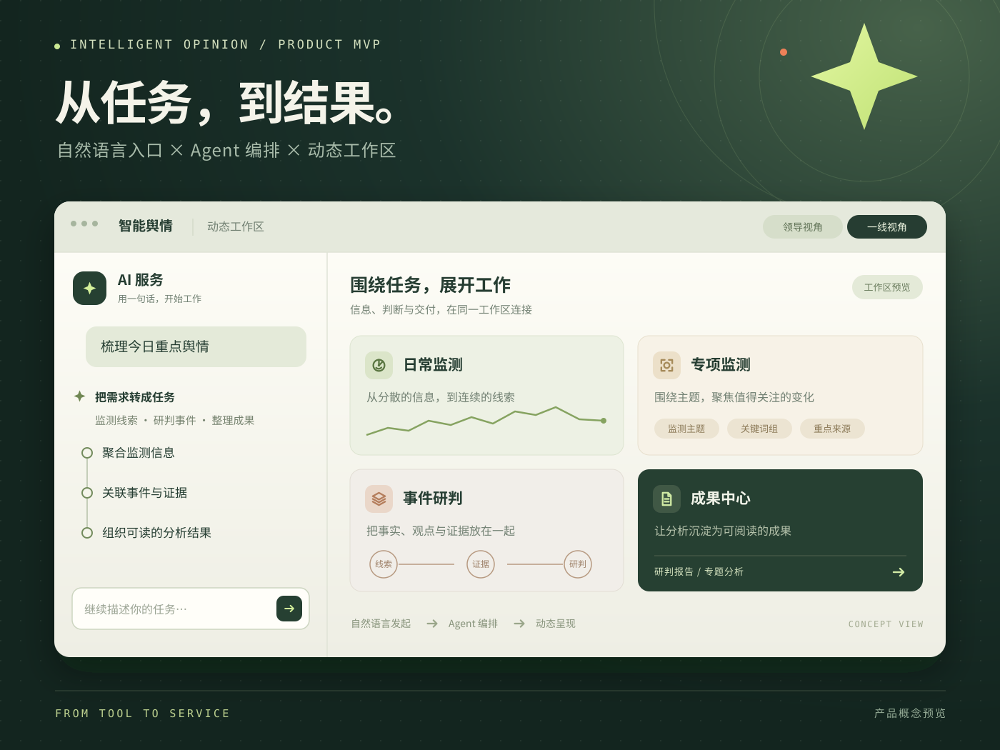
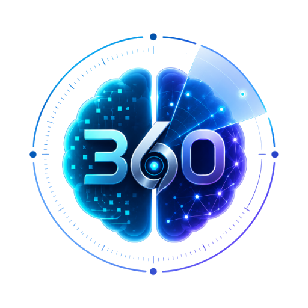
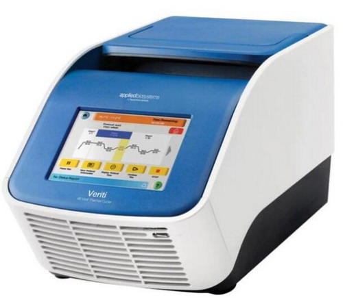
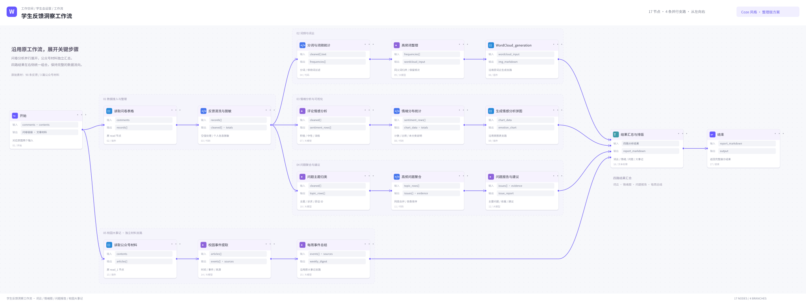

01 / FEATURED · PRODUCT MVP2025—2026
产品转型：智能舆情系统 MVP
围绕“自然语言入口 + 动态工作区”重构核心体验，让监测、事件分析、风险研判与报告生成形成闭环。
需求分析Agent 编排模型评测
AI PRODUCT · AGENT · WORKFLOW
我是吴炎斌，AI 产品经理与 Agent Builder。连接业务理解、智能体编排、Prompt 评测与前端 MVP，把“想法”推进到可用、可评估、可展示。
SELECTED WORK / 2024—2026
从政府舆情到实验室管理、从内容分析到自动化工作流，我持续练习同一件事：理解真实场景，拆解复杂问题，再把方案落成可运行的产品。

围绕“自然语言入口 + 动态工作区”重构核心体验，让监测、事件分析、风险研判与报告生成形成闭环。

test_02 实际工程：用 AI 主驾对话调度用户画像、监测方案编辑、事件研判和报告交付。

为共享实验室设计预约状态机，用 300 米定位校验与超时释放，减少资源冲突。

将问卷反馈转为词云、情绪分布与问题报告，同时汇总公众号材料中的校园事件。
学习文章结构、论证骨架与事实核查流程；附两篇生成成稿，展示从样本学习到内容交付的效果。
从推推日报读取、日历编辑到一键汇总，连接本机 WisCode 与推推桥接，保留本地日报与周报历史。
HOW I WORK
我习惯把项目拆成可验证的假设，再用原型、测试集、用户反馈和结果指标不断收敛。
从一线访谈、业务流程和用户原话开始，不先假设答案。
定义 Agent 角色、输入输出、状态与质量门，让复杂流程可追踪。
建立人工测试集与错误分类，把模型效果转成产品决策。
用前端 MVP、工作流或可演示原型，让方案进入真实反馈回路。
ABOUT / WU YANBIN
农学背景让我习惯在复杂约束中找规律，计算机辅修和产品实践让我把规律变成工具。现在，我在 360 安全科技参与舆情卫士从 SaaS 到 Agent Teams 的升级。